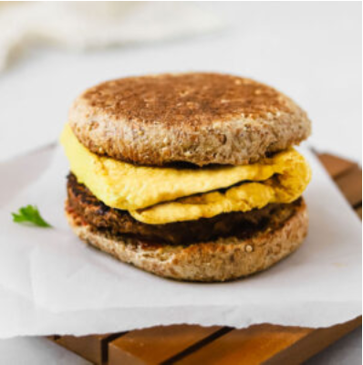

Breakfast Sandwich Vegan Egg

Description
This folded vegan egg is perfect for all your breakfast sandwich
needs! Made with chickpea flour and silken tofu, this veganized egg patty
has a soft, fluffy texture that you"ll love. These eggs are ready in under
10 minutes, making them great for a quick breakfast.
Ingredients
- 1/4 cup silken tofu
- 4–6 tablespoons water*
- 1/2 teaspoon nutritional yeast
- 1/8 teaspoon table salt (sub black salt for an eggy flavor)
- Pinch of turmeric (optional, for color)
- Oil for cooking
Instructions
- Make your egg batter. Blend together all
ingredients until completely smooth. The batter should be relatively thin and easily pour
out of the blender without sticking much. If your batter is too thick, add
more water one tablespoon at a time until you get the desired
consistency.
- Cook the egg. Heat some oil in a large
non-stick pan** over medium heat. Once the pan is fully heated, slowly
pour the egg batter into a very thin layer, covering the base of the pan.
Cover the pan with a lid and cook for 2 minutes. After 2 minutes, the top
of the egg should no longer be shiny.
- Fold the egg. With a spatula, carefully fold in
the four sides of the egg to make a square. Cover the pan with the lid,
and cook for 1 more minute.
- Flip the egg. Flip, then cook uncovered for 2
minutes, or until cooked through. The vegan egg should have a soft, spongy
texture and be lightly golden on both sides.
- Serve as desired. Enjoy this egg on it’s own or
in a breakfast sandwich! I love eating it on a toasted english
muffin with a vegan sausage patty and ketchup. This vegan egg is best
eaten immediately but will keep in the fridge for 1-2 days and is
freezer-friendly.